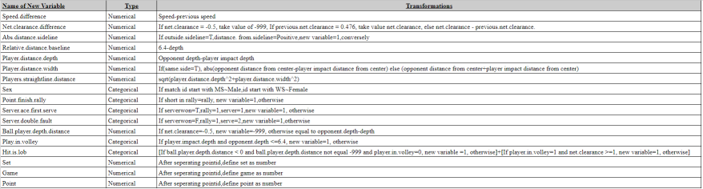

Australian Open project.
Introduction.
Tennis Australia (TA) still manually encodes winning points during the Australian Open (AO). In order to improve this process, Tennis Australia organised a kaggle competition to see who could get the best performance at predicting point outcomes using machine learning techniques.
The provided dataset consisted of shot-level summaries of point endings in men’s and women’s single matches within the 2017 and 2018 Australian Opens. Outcome, which was the response variable, was allocated to one of three categories — winner (W), forced error (F), and unforced error (U). The difference between forced and unforced errors was based on the nature of the incoming shot and a judgment about whether the shot was returnable or not. The provided data was collected by a multi-camera tracking system, which was capable of tracking the 3D coordinates of the ball position and 2D coordinates of player position over the match. The data set included 30 different of variables of both numerical and categorical nature.
Using a stacked ensemble method Knitting Club managed to get a 92.179% score on Kaggle in predicting the winning points n the public half of the test set.
This report discusses how we went about approaching this machine learning exercise. It covers what exploratory data analysis techniques we used, what prediction methods we tried and what prediction model we ended up eventually selecting.
It should be noted that all parts the data analysis were conducted using R in the RStudio integrated development environment.
Methodology.
Understanding the data set.
The first step we took in this competition was to understand the provided data.
To do this, we used a variety of resources. Significant time was spent investigating the data dictionary and inspecting the data set. However, some time was also spent looking externally for resources online.
We were able to find an a blog post written about the competition we were participating in by the Head of Machine Learning Products at Google. This article provided us with numerous more insights on top of what we were able to determine ourselves from the data.
For instance, this graph highlighted what variables were most positively or negatively correlated with the outcome variable of interest.
 Figure 1 - Strength of the explanatory power of various independent variables on the variable of interest (point outcomes).
Figure 1 - Strength of the explanatory power of various independent variables on the variable of interest (point outcomes).
This gave us some useful insight which we later applied to our approach to feature engineering on the data set.
Also available were plots of the various final shot locations on a map of a tennis court.
Figure 2 - Ball landings for each point outcome type.
It was from this that we were able to determine that some winners were actually outside both the baseline and sideline, so were either incorrectly tracked by the hawk-eye camera or incorrectly classified by human observers.
Model experimentation
The next step taken was to try and apply different models that we had learnt over the semester to the provided dataset.
First, we fitted a standard random forest model. This was our original control for seeing how well the data could be predicted. The RF model was used as it is a versatile and flexible method when working with classification-type problems. We found that the initial RF model fit had a 90.76% success rate when predicting the winning outcomes. This became our baseline for improving our future predictions.
XGBoost.
Though the initial random forest had proved to have strong predictive power, general consensus is that gradient boosting machines tend to perform better than random forests. As a second option for modelling, we used the XGBoost software package.
The XGBoost algorithm was chosen as the it includes regularization and a loss gradient function to make it learn better. Meaning for us that it will fit better models, and since the RF model worked so well, choosing a this model meant we thought this tree method would be rightly better. We compared XGBoost models by comparing error rates when predicting outcomes of a test set created as a subset of the training data provided. Smaller proportion of errors would justify a submission.
Figure 3 - Main note: accuracy measure compared between test set and prediction
Using an XGBoost algorithm with our base data set managed to achieve a Kaggle score of 91.094 using this method.
h2o.ai.
To diversify our methods, we decided to use the h2o software package; specifically the “autoML” algorithm which h2o.ai provides. The “autoML” algorithm develops a number of models based on either runtime or number of models set by the end user. The algorithm then develops a stacked ensemble using all models created as well as one using the best in class models. We used the mean per class error (MPCE) as a way to judge models created using “autoML”. We compared this value across different fits to see which models were suitable for submission.
Figure 4 - Example of leaderboards as reported by autoML as well a plot of three model MPCE
We used a 80/20 data split for training and cross-validation. We did not use a test set as this method was implemented close to the end of the competition, and submissions were sufficient.
The performance of this algorithm was significantly better compare to XGBoost, and as a result, became our primary predictive method for improving our Kaggle performance in the final days of the competition.
Feature engineering.
To improve predictive power, we engineered new features based on the original features given in the data set. These features were:
- A gender variable from MatchID
- A set, game point series of 3 variables using the MatchID
- Speed difference of the ball between last shot and ending shot
- Net clearance difference
- Absolute distance from the sideline
- Relative distance to baseline
- Straight line distance from players
A second set were made later in the challenge and was only fit to the h2o model (see appendix B):
- Difference previous opening depth vs depth
- Was the last hit a lob
- Was there a double fault before the last serve?
Results and discussion.
We were surprised at how good a baseline was set by the simple random forest model. This model was quick and simple to implement and yielded fairly reliable results.
Performance of the XGBoost model unsurprisingly exceeded what could be achieved by the random forest model. This was further marginally improved once engineered features were added to the predictor space. Interestingly, when fitting the XGBoost tree model onto the data with the first set of new variable it only increased our model prediction accuracy by ~0.7. The graphs in Appendix A show the significance of each variable in contributing to the XGBoost model fit. As can be seen, the engineered variables speed.difference, net.clearance.difference and players.straightline.distance all had a reasonably significant effects on determining tennis point outcomes.
The greatest increase in performance, however, was gained by broadening our models and combining them through a stacking method. The stacked-ensemble method approach uses multiple different modelling methods to create one ‘super’ model. This super model trains second-level models, and then finds the best combinations to of models useful for prediction..
The reason this method performs so strongly is that around 69 differing models are fitted. Combining these models allows one to capture the prediction power of each. Most models computed by autoML were gradient boosting machines and deep-learning models. There were also a few variants of random forests (DRF, XRT) as well.
Cross-validation was completed on 20% of the training data. All of this helped to reduce error and make better predictions. Unfortunately, the autoML process required substantial computing power (sometimes up to several hours), which meant that producing new models was gradual.
It was interesting to note that with the extended features we created, including the lob & double fault variables barely changed the performance of the stacked ensemble model. This could be further improved with more Hawkeye data. The data given also made it hard to work out where the player was standing, which meant we could not work out if they were on the left or right of the court which would have been helpful in predicting the data.
Conclusion.
Knitting club scored 92.179% in the Kaggle competition using a h2o stacked ensemble with 10 new features. We found that the stacked ensemble method used the most computing power and was easily by far the most powerful of the models we fitted. Further we found that feature engineering new variables gave the model much more predicting power.
Looking back on this challenge, Knitting Club would probably feel it would be best to do further exploratory analysis of the data before attempting model fitting. This way, more focused and targeted feature engineering could be implemented potentially with simpler and more effective prediction models. By and large the approach we took was more of a brute force mentality. We focused significant computing power on the problem of prediction, which in the end came at the cost of model interoperability.
Appendix
Appendix A
Appendix B 
Appendix C